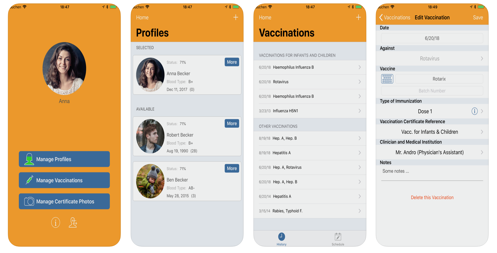

No more lost vaccination records!
Track vaccinations with ease and manage records securely across devices with Vaccine Tracker.
Accessing your records on the go has never been easier. Vaccine Tracker is a useful App, that helps you manage your digital Vaccination Records and those of your family.
Now is the perfect time to get your vaccinations in order!
Why use this app
- we don't always know where we have put our vaccination records...
- a doctor consulted in an emergency, or when away from home, doesn't know our vaccination record...
- if we lose our vaccination record, we sometimes have to be revaccinated when we don't really need to be...
- we want to be able to choose our vaccinations according to our personal situation...
- we don't always remember that a vaccination is due in a few months' time..
Key Features
- Secure user profile including blood type, special conditions like allergies, etc & doctor name and address
- Create and manage profiles for your whole family
- Learn about outbreaks of vaccine-preventable diseases in your area
- Detailed general info & suggested schedule for routine vaccines in country
- Log of vaccine given status, given date, place, manufacturer name and vaccine number
- Authorize your doctor or pharmacist to access it: this allows them to see which vaccines you have recorded, to complete them if necessary and to validate them, so that this official vaccination record can then be printed out as often as you wish
- Alerts for next vaccine due and set reminders
- Export records by email, pdf, dropbox, icloud
